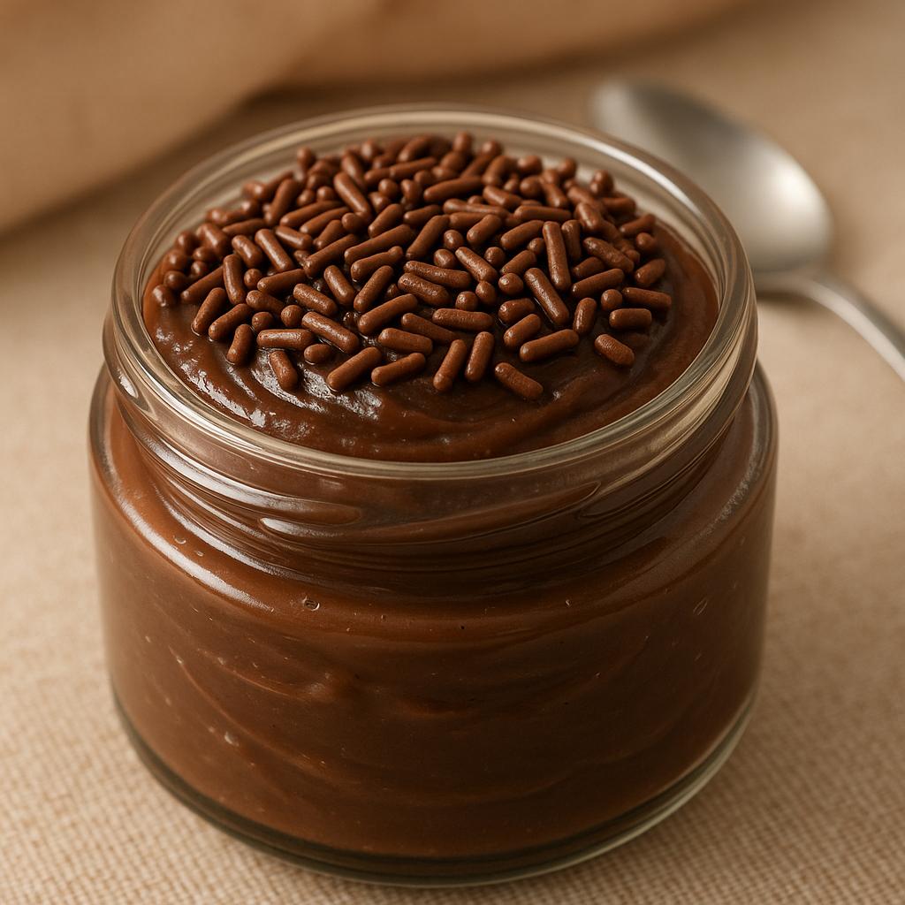
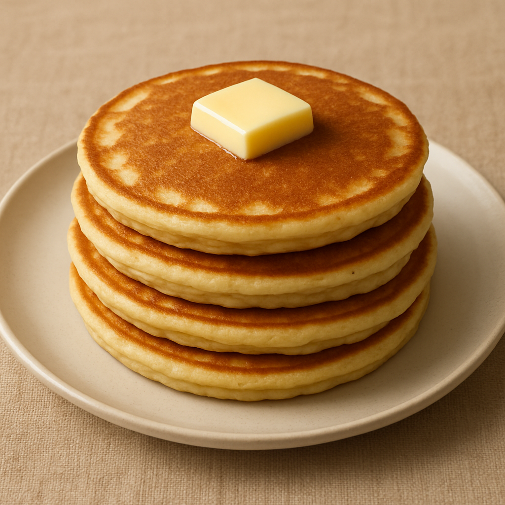

Brigadeiro  ♡ Doce tradicional brasileiro Super fácil de fazer e ótimo para quando está com aquela vontade de comer doce Ler mais
Panqueca americana  ♡ Perfeitas para comer no café da manhã Prático de fazer e fica perfeito com coberturas e frutas Ler mais
 FavoriteCandy
FavoriteCandy